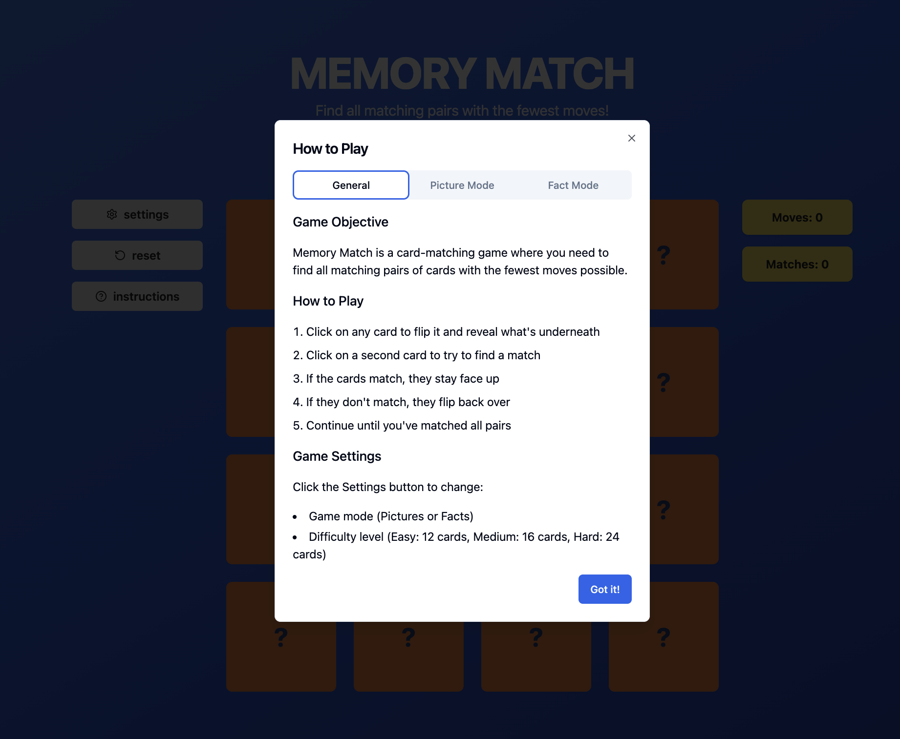
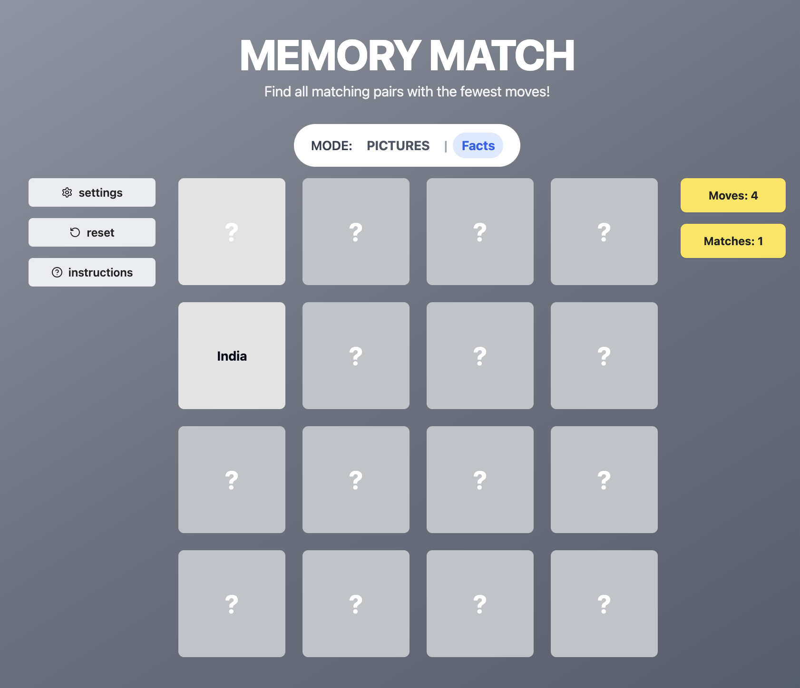
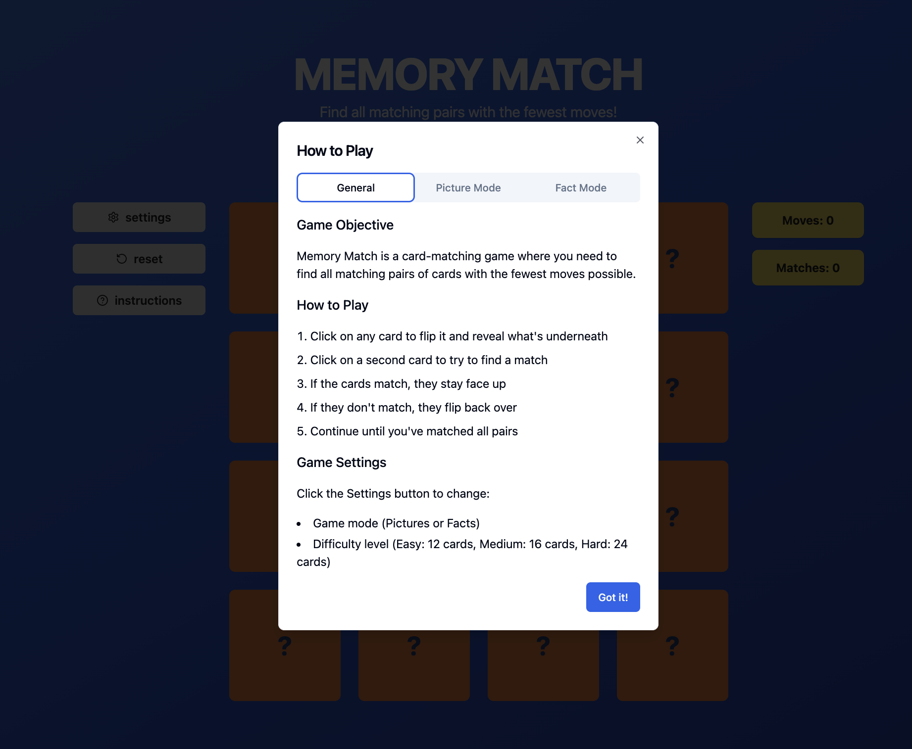
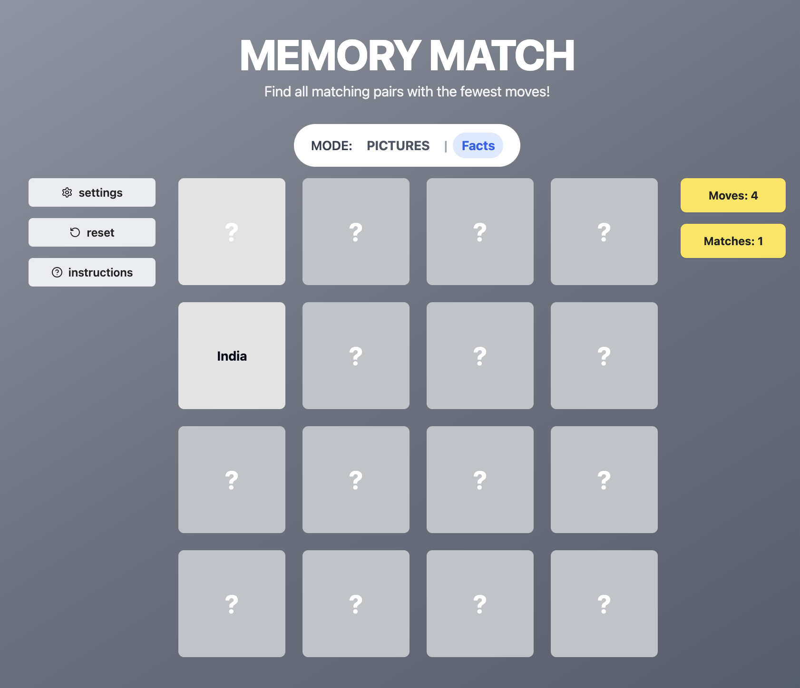

Design 2: Game - Memory Match
This game was designed as part of a UI design course assignment. It focuses on creating games for exploring human cognition.
 



This interactive card matching game challenges the player's memory and concentration. Designed with cognitive psychology principles in mind, it aims to improve short-term memory and recognition speed through simple, repetitive play. The objective is to flip cards and find all matching pairs in the fewest possible moves. The interface uses a minimalist aesthetic to reduce distractions, making the game approachable for users of all ages. Typography choices reinforce usability—Quicksand is used for main headings and instructions to promote a friendly tone, while simpler fonts are applied to game statistics and buttons to ensure readability. The color palette and animations provide clear visual feedback for user actions. For example, flipping a card uses smooth transitions, and matched pairs stay revealed, providing both satisfaction and cognitive reinforcement. The game is responsive, accessible on both desktop and mobile devices, and includes a reset feature so players can replay easily. User experience is enhanced by:
- Contrast-rich design for visual clarity
- Immediate visual feedback upon match/mismatch
- Compact layout optimized for performance and focus
- Low cognitive load navigation